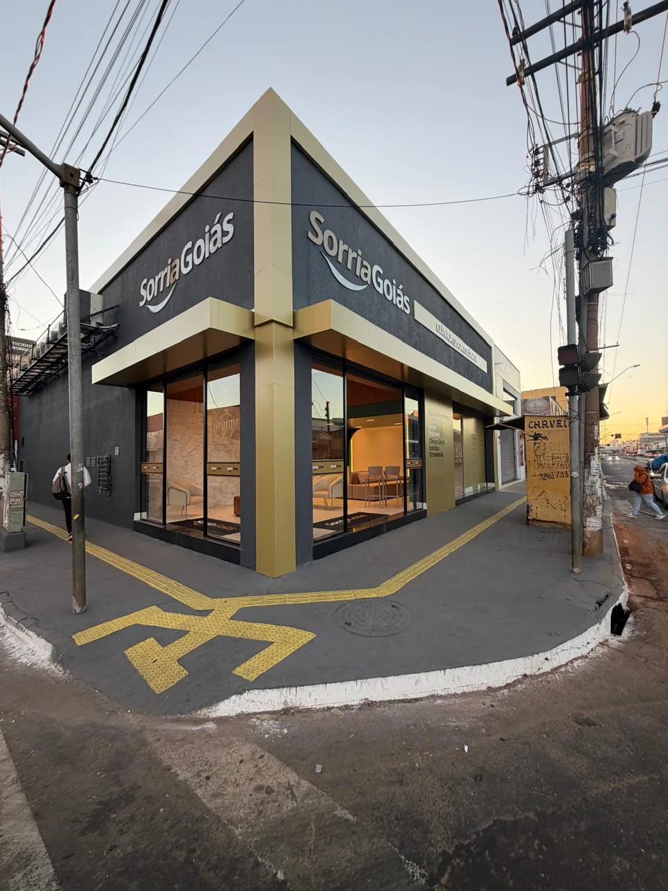
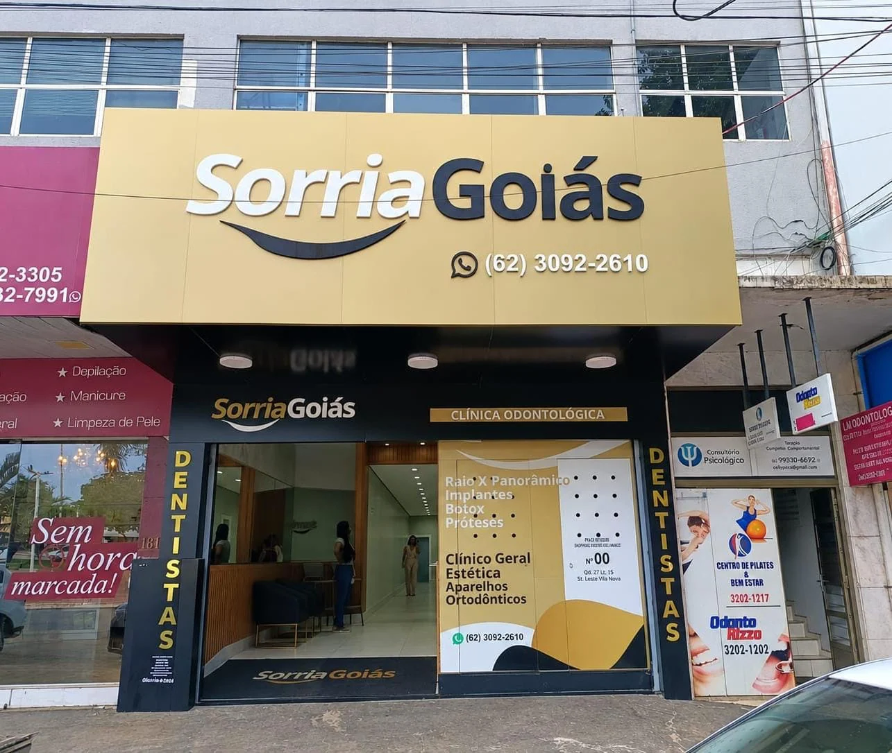
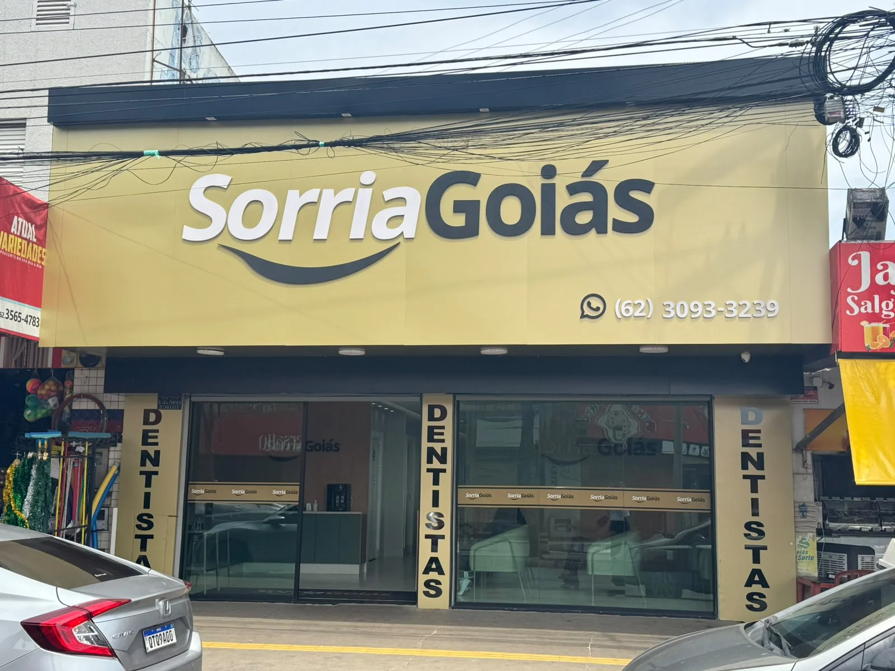
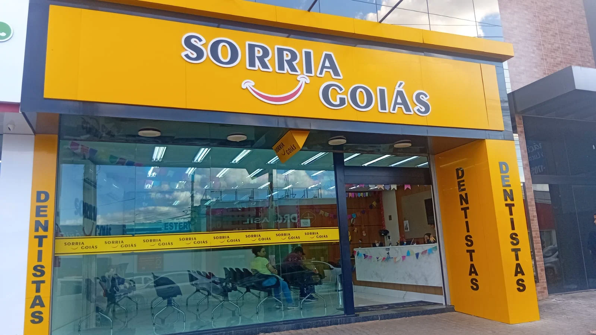
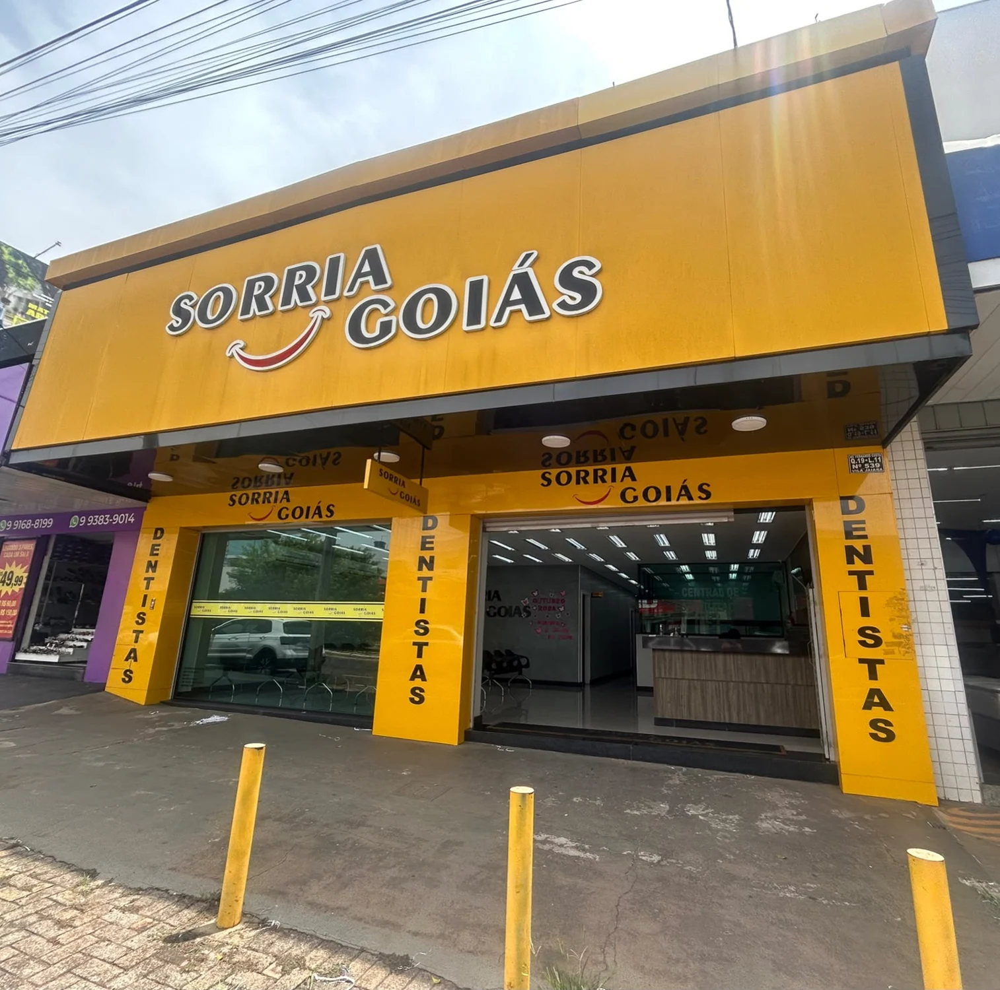

✦
Sou colaborador(a)
Recepção, atendimento, administrativo, comercial e outras áreas.
Encontre uma unidade perto de você, conheça nossos espaços e fale com nossa central para agendar sua avaliação.



Informações claras, localização fácil e contato direto com nossa equipe de agendamento.
Pesquise pelo nome da unidade, cidade ou bairro para localizar a opção mais conveniente.
Um único número para começar o atendimento, com a unidade desejada já identificada.
Veja fotos reais das fachadas de nossas unidades e saiba onde encontrar a equipe Sorria Goiás.

Cuidar do sorriso também é oferecer uma experiência acolhedora. Conheça nossos espaços e encontre a unidade Sorria Goiás ideal para a sua rotina.
Por trás de cada unidade existe uma trajetória de dedicação, aprendizado e vontade de tornar o cuidado odontológico mais próximo das pessoas. Conheça a história do Grupo Sorria e os valores que inspiram a Sorria Goiás.

Conheça publicações da Sorria Goiás. Ao selecionar uma história, você será direcionado ao Instagram.
A utilização das capas está autorizada pela marca; as imagens originais ainda precisam ser fornecidas para inserção. Por enquanto, usamos cartões identificados, sem reproduzir imagens de pacientes. A divulgação de resultados exige consentimento e revisão conforme as regras de publicidade odontológica.
Escolha o perfil e veja como manifestar interesse em oportunidades na Sorria Goiás.
Recepção, atendimento, administrativo, comercial e outras áreas.
Conheça o canal para demonstrar interesse em atuar como profissional parceiro.
Os botões serão direcionados aos formulários oficiais de colaboradores e dentistas assim que os links forem fornecidos. Nesta prévia, o contato continua pelo WhatsApp.
Escolha o assunto para iniciar o atendimento com a equipe responsável.
O atendimento é iniciado no WhatsApp central; o site ainda não gera protocolo automático de SAC. Evite enviar dados clínicos sensíveis na primeira mensagem.
Busque por cidade, bairro ou nome da unidade. Depois, abra a rota ou agende sua avaliação.
Os endereços foram fornecidos e conferidos para este projeto. Antes da publicação definitiva, a equipe deve verificar eventuais alterações de atendimento e horários. As fotos identificadas por unidade correspondem às imagens fornecidas para cada clínica; as demais unidades podem aparecer sem foto até o envio de novos registros.
Olá! Sou um assistente automático de perguntas frequentes. Como posso ajudar?
Respostas automáticas informativas; não substituem avaliação odontológica.